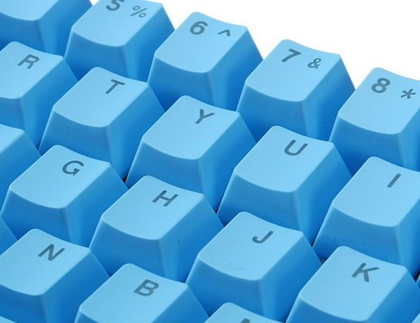

Accesorios
Accesorios para Keycaps y periféricos del teclado
- PCB: es la placa con el circuito impreso. Tendremos que vigilar la distribución (USA,
etc.), dado que las teclas que podamos configurar estarán en función de eso.

- Switches

- Keycaps

- Amortiguadores o Estabilizadores

- Carcasa: la parte externa. Ha de ser compatible con la PCB.

- Placa: no es algo necesario de base, pero aporta robustez. Normalmente son de aluminio,
acero o plástico, diferenciándose sobre todo en la durabilidad y la resistencia.

- LEDs: también han de ser compatibles con la PCB. Según cuáles elijamos se podrán instalar
sin soldar o no.

- Herramientas: soldador, estaño, bomba desoldadora (opcional), alcohol isopropílico,
estropajo de acero inoxidable, tornillos.

- Key puller: una herramienta sencilla, la cual se utiliza para extraer las teclas de un
teclado mecánico de forma segura y fácil.